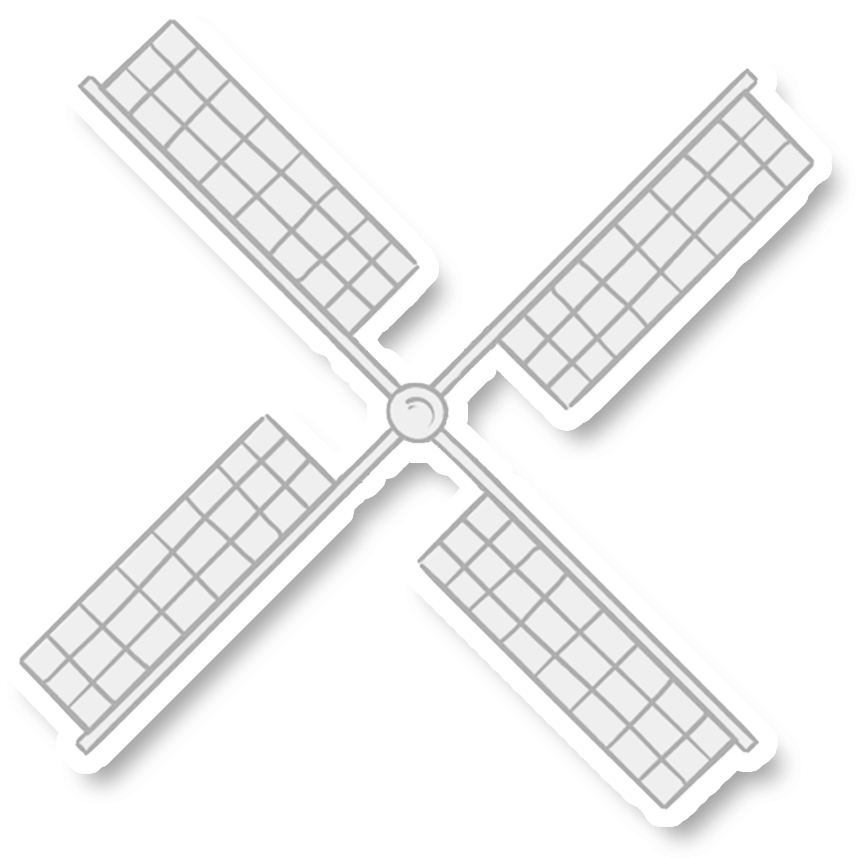

向你解释“独立游戏”的概念或许太为突兀
但你也许听说过纪念碑谷、烟火、拣爱
这些都是曾经爆火的独立游戏之作
但如何真正界定它是一个很复杂的行为
狭义与泛义各有道理
开发者也有不同的理解
定义边界没什么意义
大家都认同的是
创作者的思想表达，是制作独立游戏的第一要义
区别于商业化、工业化的制作导向
独立游戏的创作中
开发者的思想得以更为纯净地表达出来
这使得独立游戏成为更能无限接近于“第九艺术”
迸发创造性的佳作
但当我们真正聚焦到那些游戏背后进行创作的这一人群
会发现现状远比想象中复杂，在这条艰难探索的路上
困难屡见不鲜，机遇倏忽而至，矛盾与灵感并行
第一脚就死在路上的也并不罕见
“不要看独立游戏这几年出了很多爆款，但无声无息死掉的游戏不计其数”
“独立游戏人其实没有那么惨，质量好的都能活下来”
他们的真实处境是怎样的？ 从1695款国产独游与28位开发者的交流中
我们试图勾勒一场关于“独立游戏”的冒险之旅
坐在工位上，打开电脑，敲代码，这是游戏创作普通的一天。平淡，波澜暗生， “拉一个腾讯会议就开始吵架”，但思路就在争吵中把握；“一天啥也没干的焦虑中”，灵感也许厚积薄发。
独立游戏的开发往往仅有少数几个人开发完成。甚至千万级别发售的《xx》，开发团队也仅有一人。但这并不新鲜。制作独立游戏极度需要热血与激情，意味着他们需要能够彼此之间对的上电波的小伙伴，知己难求，这就导致了在这个行业里，单打独斗成为一种常态。
但很多时候，孤独并不是一种脾性，而是一种无奈。游戏领域的职能不均也为组队带来了困难。
几乎半数的制作团队仍在孤军奋战
声画是游戏表达的重要手段，但行业内的能做美工与音乐的人数严重不足
更尴尬的是，游戏行业内的程序员很难跨界到其他领域，但声画人员是可以流动的
这导致很多团队只能外包，这又是一笔额外的支出
但寥寥无几的人手伴随的是窘迫的经济状况，在一份独立游戏人互相寻求伙伴的共享文档中，半数以上的团队都在“为爱发电”，这意味着在整个开发的过程中，独立游戏制作人不仅无法获得任何经济支持，还要一起承担项目开发、设备运行的成本。是真正的“输血支持”。
为爱发电具体指“上线后再分成”，这是很大一部分团队的选择，意味着仅仅在游戏上线后才有机会得到分成。
但创作本身就是一个看不到结果的过程，独立游戏的开发更是九死一生。
现在你是一位独立游戏制作人，将尝试组建自己的团队并开发一款游戏，通过确定成本与售价，你将开启一场关于生存或死亡的冒险。作为艰难探索的旅行者，你将亲自感受开发一款独立游戏的存活率。那么，祝你好运！
知名游戏开发者侯帅英通过计算得出结论：一年的项目周期，在国内4人团队做一个独立游戏的成本大概在80-100万人民币左右。《丸霸无双》三人的制作团队，在极力压缩租房成本与工资之后，2年仍然投进了80万。发布两年，游戏的收入甚至还没有抵消成本，尽管这已经是一部算得上成功的游戏。
这也是为什么为爱发电听起来是一件很伟大的事情，给人一种满腔孤勇的奉献感，但很多时候演变成以热爱为名的剥削。这并不健康，显然也不利于行业的长远发展，但没办法。“我们努力在以后争取早日摆脱为爱发电的状态”
有时为了稍作补贴，众筹成为一种选择，或者是上线后的宣传手段。为数不多的团队会去众筹平台上寻求游戏热爱者的支持，但往往杯水车薪。不乏一些优秀的游戏通过众筹实现了创意，也有游戏3个月几千元也筹不到。
喵之旅人的创作者崔毅将独立游戏人比作蒲公英，在不同的土地上抒发才华。但显然并不是所有的种子都能扎根。开发者心向往之游戏创作中技术与艺术带来的无限可能，但这条路更像是向死而生，困难突如其来，不计其数。他们没有钱，可能即便成功也赚的不会太多，甚至连基础的软件与代码都是从头自学的（加具体某一个人的例子），支持他们继续下去的只是心中的一个创意，于是一切就这么发生了。
即使面临各种窘迫，他们却认为这是一个充满幸福感的过程，“你为一个独立游戏所付出的现实成本几乎接近于0，这已经值得很多人为创意放手一搏了。”
“一个好的游戏可以既生动又有趣，给玩家独特的视听感受。我希望通过我制作的游戏能把我的所思所想传递出去，把我的创意和制作化作有趣的内容给玩家带去独特的体验，我希望我的努力能让独立游戏圈内多一份独特有趣的作品，所以我想要成为独立游戏制作者。”在朴实而笨拙的文字中，是游戏开发者得以坚守的原因。”
或许正是单纯，因而显得可贵，创意闪闪发光，即便没有足够的资金支持，没有充分的人手帮助，这种孤注一掷中，反而涌现了那些令人拍案叫绝的设计。
“回顾历年的tga最佳独立游戏，你会发现它们在独游领域都是一些划时代意义的作品，而且在独游中能看到在gameplay层面真正有突破真正让人眼前一亮的设计，包括我在自身游戏生涯中真正让我拍案叫绝的设计也大多来自独立游戏，对于商业化和3A手游，我们更多感叹的是技术类层面，还有它工业管线层面的东西，真正从艺术这块启发的话可能还是来源于独立游戏。”
游戏开发或许是最重要的一部分，但距离真正的发售仅仅是第一步。想要在国内市场上线，开发团队首先要做的就是申请版号。
申请版号的周期在半年到两年不等，甚至xx回顾多年前与版号打交道的经历说道，“主要是准备材料，大概几个月完成了”。但2021年《巴别号》的制作团队，足足等了530天，意味着530天无法上线，没有收入，这只是2021年那场版号寒冬的一个惨烈的缩影。
2021年是很多游戏人感到猝不及防的一年，版号发放突然停滞，直接导致接近个大小企业死亡。
很快，游戏人奔走自救，随着一封信的出现，危机似乎解除。但即便是在如今渐渐回暖的环境下，版号仍然存在着较大的缺口
但独立游戏开发者也有自己的解决方案，steam平台的存在使得版号的影响并没有想象中那么可怕，“虽然不乏被慢慢拖死的工作室，但受到影响更大的是商业游戏”。实际上，团队准备海外版本也有一段时间了，如果不能上架，就放弃国内市场，尽管这将让游戏几乎失去当前所有收入，但“也是没办法的事情”。
这个行业，“变化是常态，矛盾也是常态”
提交99美金的保证金，将游戏直接发布至steam平台，接受35%的收入抽成，这是更大一部分人的选择。“根本原因就是这个成本对我们来说实在是太大了，我们没有办法做出一款游戏，然后等半年到两年，具体是多久都不确定，等他版号下来之后我们再正规上架”，拖一天就是一天的成本。
中国人的独立游戏无法上线国内应用商店也许是一种遗憾，但steam的存在使得中国的游戏能直接面向海外，本身也提供了全球性的视野，在这样的境况下，中国的开发商也逐渐占据越来越重要的位置，这或许也是一种“塞翁失马”
“但我们仍然期待更好的未来”
55分到46分，这是发行商的抽成比例，虽然能为游戏带来一定的曝光度，但赚10块给5块的高额分成还是使很多游戏人望而却步。1659款游戏中，超过1000款游戏的开发和发行是同一拨人，其中很大一部分为独立宣发的制作者。
因为没有发行商的宣传能力，他们只能尝试自己找媒体、KOL进行宣传。其中最常见的一种就是草根宣传。
草根宣发是成本最低的一种宣传方式，像发传单一般，在QQ群里发送自己的作品链接，请求游玩，但不同于发传单的是，大家一般都会给予温暖的回应。
QQ群是游戏人的社群聚集地，草根宣传是最朴素也是最常见的宣传方式，在你来我往的呼应中，是游戏热爱者的声援与鼓励。
但不是所有的自行宣发都能如此简单，追求更高的曝光度也要面临高额的报价，“这是我的游戏你要不要试玩一下，还可以的话能不能帮我们说两句”。以最常见的找B站up主为例：
“其实你去拜托，只要你的游戏够好，大家都是会去帮你的。都是免费，其实国内大家对独立游戏还是比较热心的。”但令人痛苦的就在于宣传结果的不可预测与不可控制，成本与时间就投递在虚无缥缈的希望中，很少有人去统计这些宣传究竟给游戏带来了多大的曝光度，但在我们的计算中，他只是follower平缓曲线中微不足道的一个小坡。
我们统计了近十年的1695款国产独游，他们的均价在27元，但在淘宝上，可能 9.9就能买到十个。
“开发商会帮我们解决盗版的问题，但独立宣发者会面临更大的困难”如果说独立游戏没钱是常态，没人是常态，那么盗版游戏显然也是一种根深蒂固的存在。但很少能有开发者诉诸公堂，即使背后是那些有身份的发行商，很多时候也没有办法。
盗版环境的背后是，买断制市场与意识的错位，“但即便是你把这些事情解决了，他只会选择不玩你的游戏，而不会选择购入正版”
其实身为程序员本身，很多开发者已经进行过反盗版的技术尝试，steam平台本身也有反盗版的机制，但真正体会下来，往往感觉道高一尺魔高一丈。“加密是没用的，有些环境下甚至还会让正版玩家没有办法正常运行”
维权难，盗版易，几乎已经成了行业的一种常识，面对盗版，更多的人是麻木。有趣的是，有开发者通过技术在盗版游戏中植入一下额外的“惊喜”，在《亿万僵尸》游戏中，盗版用户在游戏过程中基地会自爆产生僵尸，他们甚至给这个功能制作了特效动画。惊喜背后，是开发者接受处境后的自嘲。
杂货店的财务预算有一项叫做盗窃损失，某种程度上，盗版游戏带来的影响就像盗窃，他是开发者在游戏制作之前就要计算的损失，也是目前无法避免的存在。
但当我们回过头来注视他们，却发现他们自有一条歪歪扭扭的解决路径。没有资金就一起众筹，没有版号就上steam发行，宣发困难就口耳相传，各种信息的交流互通也是一种默契。很难想象这一本该十分脆弱的群体，却总 表现出惊人的坚韧，没有钱，没有人，没有关注，但就这样野蛮生长。
于是，最后我们说，“是的，独立精神指自己走上绝路然后努力自救”。游戏被称为第九艺术，但这些创作者筚路蓝缕，为了一个创意义无反顾，本身就是一种艺术。
十年前，我们只有……，但因为这样一群孤僻而执拗的灵魂，今天，我们能听到更多的声音，为各种奇思妙想拍案叫绝。
现在我们说独立游戏是什么。是一场《喜丧》背后关于拐卖与罪恶的真相；是《拣爱》每一个关于爱或不爱的选择；是进入《抑郁的房间》，真实体验 “她”的一天；是《坏小孩》在那个社会矛盾交织的年代改邪归正的
独立游戏和音乐电影一样可以热泪盈眶，很多人对游戏有误解，许多游戏不是打发时间的，它同每一位独立创作人一样，和世界分享自己的热爱和生命。
作为人类文明历史上第一个可以让观众参与到生成主题的仪式中来的主流艺术形式，未来游戏的艺术表现力怎么强大也不会让人感到惊讶。如果这个艺术形式一直停留在玩物的等级，才是一种荒诞。
而为了十年后才能实现的理想而赌上今天的全部的人是最值得尊敬的。